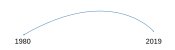

Inequality has Generally Dropped Between 1980 and 2019 in LATAM
Although there are few exceptions like Paraguay and Costa Rica,
increases in GDP per Capita in Latin America are commonly associated with drops in inequality measured by the Gini Index.
